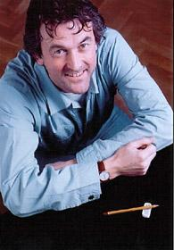

Componist Johan de Meij

Biografie Johan de Meij (copyright http://www.euronet.nl/~amsmusic/)
Johan de Meij (Voorburg, 1953) studeerde directie en trombone aan het Koninklijk Conservatorium in Den Haag, en verwierf internationale erkenning als componist en arrangeur. Zijn oeuvre omvat originele composities, symfonische transcripties en bewerkingen van filmmuziek en musicals.
De Symphony no. 1 THE LORD OF THE RINGS, gebaseerd op Tolkiens gelijknamige bestseller, is zijn eerste grote compositie voor harmonieorkest, en werd in 1989 bekroond met de prestigieuze Sudler Composition Award. In 2001 vond de première plaats van de versie voor symfonieorkest, uitgevoerd door het Rotterdams Philharmonisch Orkest. Ook zijn andere grootschalige werken vonden wereldwijd hun weg naar de orkesten, zoals de Symphony no. 2 THE BIG APPLE, het T-BONE CONCERTO (voor trombone en harmonieorkest) en CASANOVA (voor cello en harmonieorkest). CASANOVA won in Italië de 1e prijs in de Internationale Compositiewedstrijd van Corciano (1999), en een jaar later werd een recenter werk, THE RED TOWER, bekroond met de Oman International Composition Prize.
Naast het componeren is Johan de Meij als musicus op diverse terreinen actief. Als trombonist maakt hij deel uit van o.a. Orkest De Volharding en The Amsterdam Wind Orchestra, en is hij vaste remplaçant bij o.a. het Radio Kamer Orkest. Bovendien is hij een veelgevraagd dirigent: hij leidde concerten en seminars in vrijwel alle Europese landen en trad op in Japan, Singapore, Brazilië en de Verenigde Staten.